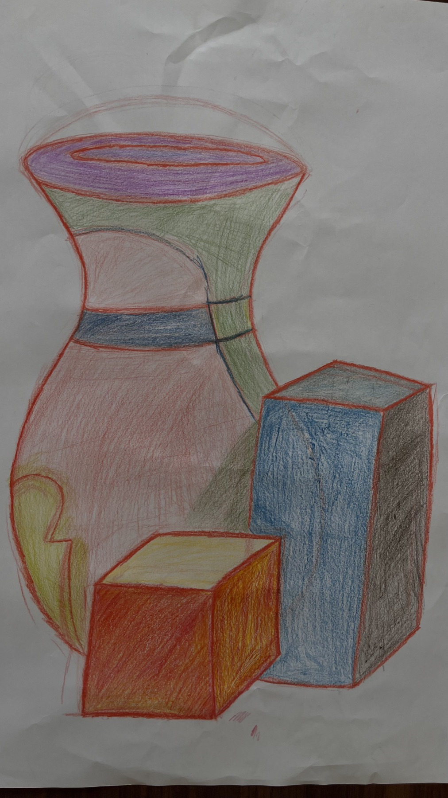
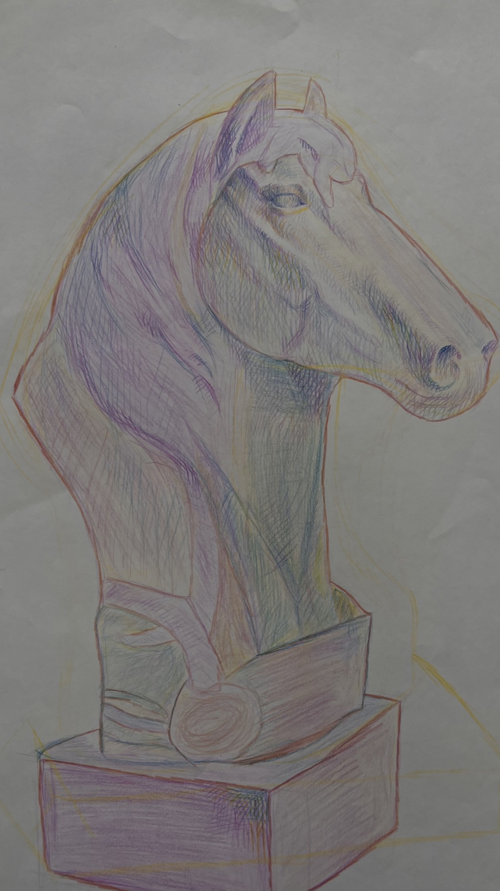
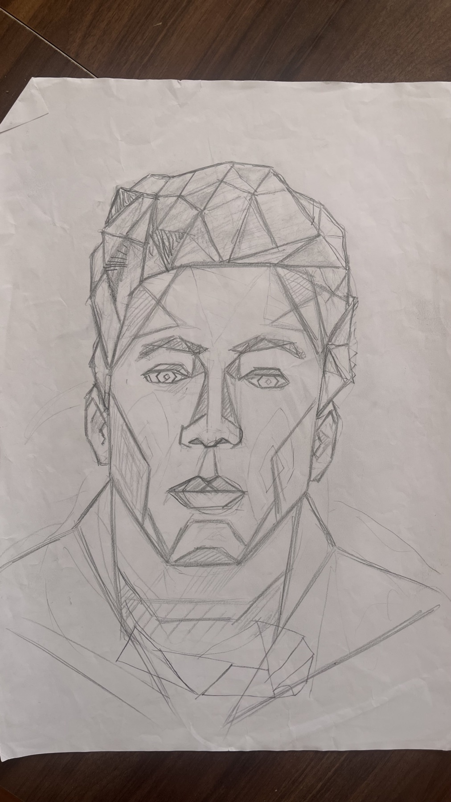
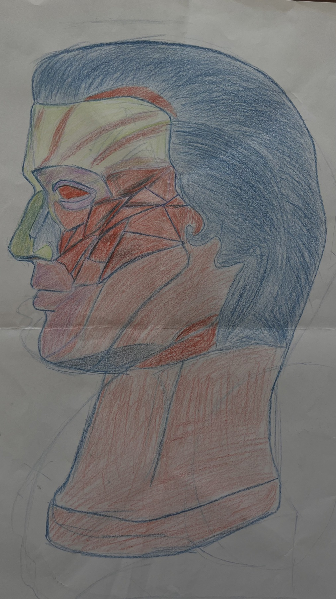
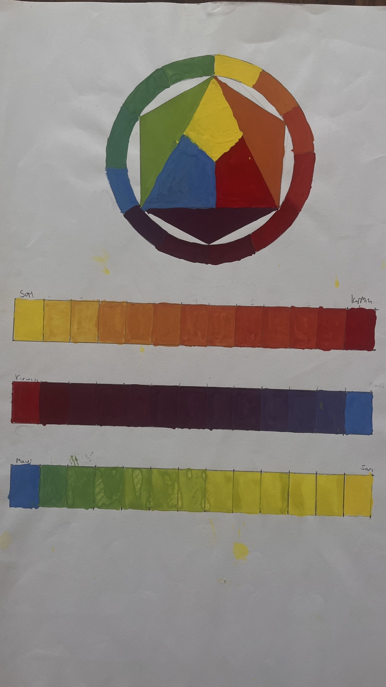

Cinematic Portfolio OS
Premium homepage, multilingual content and drawing-led storytelling.
Creative Technologist / Premium Designer / SEIS Founder
Premium homepage, multilingual content and drawing-led storytelling.
Typography, color and rhythm held inside a practical visual system.
Long-form hierarchy designed for calm scanning and reduced fatigue.
External portfolio links, drawing projects and embed-ready showcase slots.
Behance / Visuals
Portfolyo / Indeks
Portfolio / Collections


Poster, social and campaign visuals presented as a polished proof wall.


Graphite and color works become an authored visual research archive.



The website itself is treated as a design object with motion, editorial flow and calm interaction.
Portfolyo / Akis
Canli Behance gorselleri ve embed kodlari portfolyonun dis kaynakli kanit katmanini tasir.
Karakalem ve renk etutleri ana vitrine bagli sakin bir gorsel arastirma arsivi kurar.
Hizmet, marka ve arayuz dusuncesi uygulanabilir proje yuzeylerine baglanir.
Behance / Embed


Lab / Long-term
Gercek Behance gorselleri ve iframe embed kodlari portfolyo icerigi olarak tutulur.
Cizim arsivi daha guclu gruplama, notlar ve mobil galeri ritmiyle buyur.
3D sahne daha guclu scroll gecisleriyle gelisir, reduced-motion destegi korunur.
GitHub, Vercel ve custom server hedefleri secrets yazmadan credential-aware kalir.
Q&A / Iletisim
Kisa hedef, referanslar, zaman araligi ve beklenen teslim formatlari yeterli.
Evet. Behance gorselleri is kaniti, cizimler sanatsal arka plan olarak birlikte gorunur.
Premium hareket korunur; reduced-motion ve fallback yuzeyleriyle performans guvende kalir.